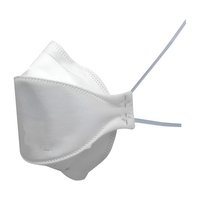
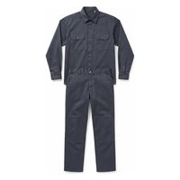

Trabajo seguro con lana de vidrio y lana mineral
Aislación de cañerías · noviembre 2026 · video de 1:56DISPONIBLEMaterial para descargar
EPP obligatorios
 Casco de seguridad
Casco de seguridad
Barbijo N95 Antiparras cerradas
Antiparras cerradas Guantes
Guantes
Ropa de trabajo Calzado de seguridad
Calzado de seguridad Cabeza y cuello
Cabeza y cuelloCómo se trabaja
1Antes: material embalado hasta su uso, ventilar y señalizar la zona. En altura, escalera o andamio en buen estado y arnés desde 2 m.
2Durante: cortar con cuchilla, de preferencia de hoja retráctil, NUNCA con herramientas eléctricas, y sin sacudir el material. Pegamento: guantes de látex. Chapa: guantes anticorte.
3Al terminar: recortes en bolsas cerradas, limpiar con aspiradora o paño húmedo (nunca barrer en seco), lavarse con agua fría y jabón y lavar la ropa de trabajo aparte.
Si pasa algo
Fibras en los ojos
No frotar. Enjuagar con abundante agua durante 15 minutos. Si sigue la molestia, consultar al médico.
Irritación en la piel
No rascar. Lavar con agua fría y jabón y cambiarse la ropa con fibras.
Tos o irritación de garganta
Salir al aire libre. Si persiste, consultar al médico (ART).
Ante cualquier duda, SIEMPRE consultar antes de empezar.
Acá se van a ir sumando las próximas capacitaciones.